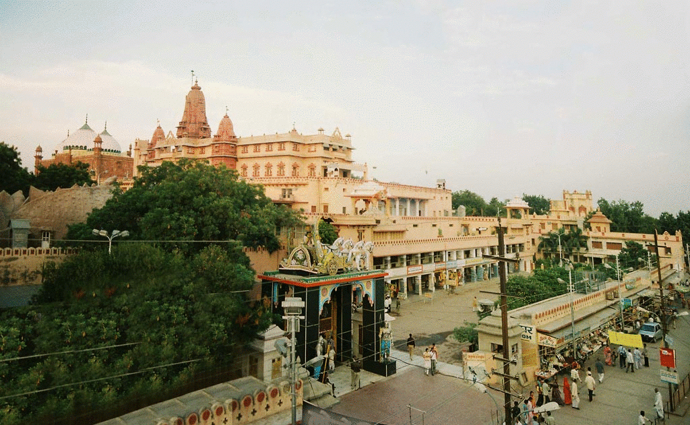
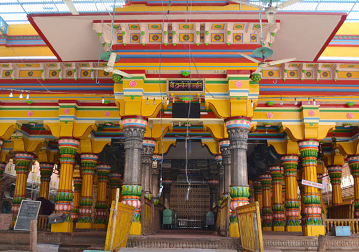
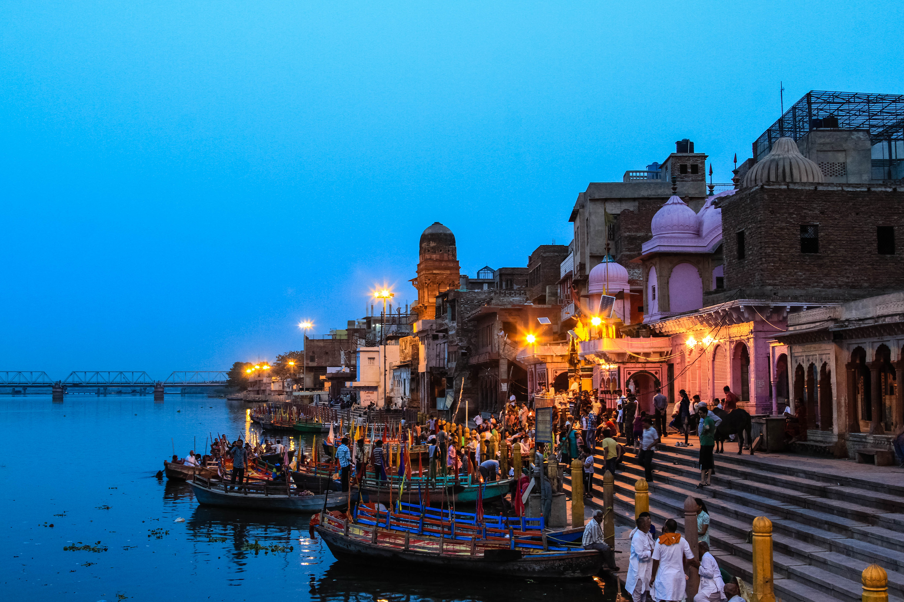
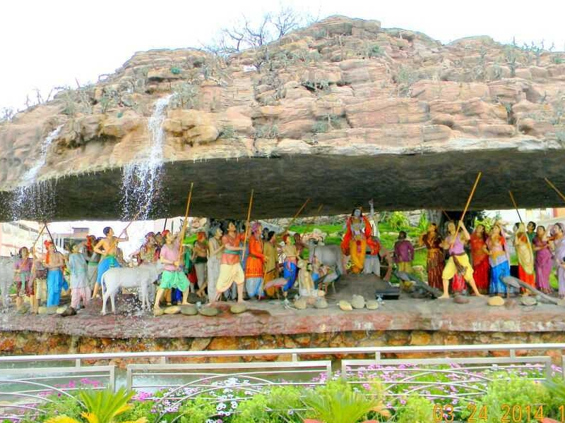

SPIRITUAL
Krishna Janmabhoomi
A major pilgrimage site traditionally associated with the birthplace of Lord Krishna.
Explore Krishna Janmabhoomi →Discover the sacred city of Mathura, known as the birthplace of Lord Krishna and a place filled with ancient temples, colourful traditions and spiritual heritage.
From the sacred Krishna Janmabhoomi to the peaceful banks of the Yamuna, Mathura offers a journey through India's rich spiritual and cultural heritage.

A major pilgrimage site traditionally associated with the birthplace of Lord Krishna.
Explore Krishna Janmabhoomi →
A historic temple known for its beautiful architecture and vibrant festivals.
Explore Dwarkadhish Temple →
A beautiful riverside ghat on the Yamuna, especially atmospheric during evening aarti.
Explore Vishram Ghat →
A sacred destination near Mathura, famous for the Govardhan Hill and its pilgrimage route.
Explore Govardhan →Mathura is well connected by railway and road, making it convenient to reach from major North Indian cities.
October to March generally offers comfortable weather for exploring the city and nearby pilgrimage sites.
Try local North Indian flavours and traditional Mathura sweets during your visit.
Holi and Janmashtami are among the city's most famous cultural and religious celebrations.